I'm a data enthusiast who likes turning spreadsheets and public datasets into something people actually want to look at. Right now my toolkit is Power BI and Tableau for dashboards, Python (pandas, matplotlib, Jupyter) for one-off data stories, and SQL for digging into relational data — this site is basically a running log of that. Based in Bytom, Poland, always happy to talk data over email.
October 8, 2026
Twenty Years of Polish Counties
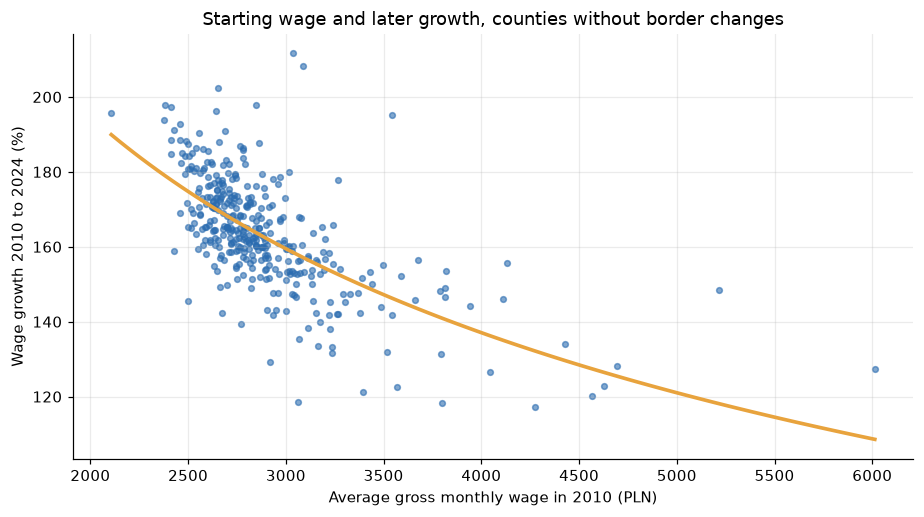
Wages, unemployment, population and age for all 380 Polish counties from official statistics, in plain SQL: a pivot view, border changes caught with LAG before they distort the comparison, a regression slope computed from sums to test whether poorer counties catch up, rank changes and the counties that stay at the bottom of the unemployment table year after year.
October 8, 2026
80,000 Free Books
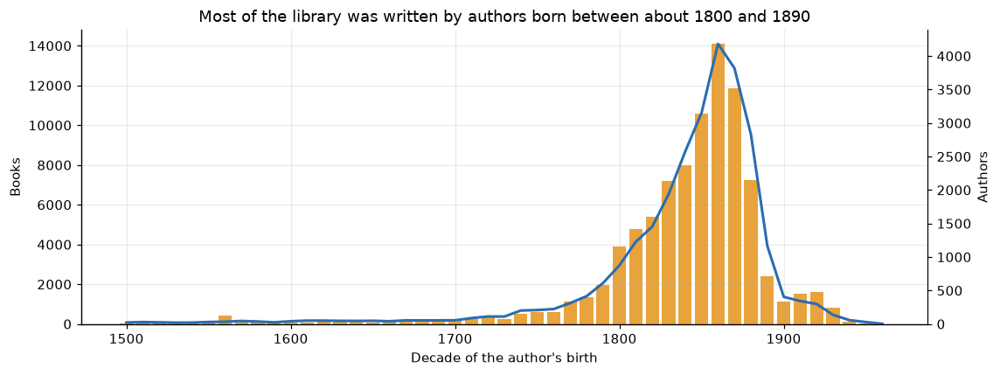
The Project Gutenberg catalogue in plain SQL: how the library grew in bursts, the slow drift away from English, authors born between 1800 and 1890 behind most of it, lifespans over five centuries, subject pairs measured with lift and a recursive CTE that splits titles into words.
October 8, 2026
Every Ball of the IPL
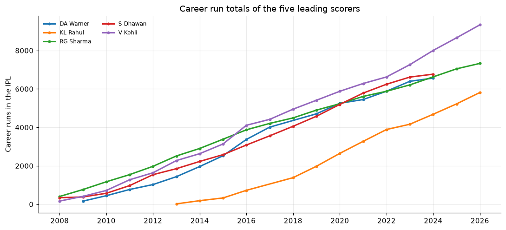
Nearly 300,000 deliveries from the Indian Premier League in plain SQL: how scoring jumped from 161 to 193 runs per innings, batting and bowling tables built from joins and CASE logic, powerplay against death overs, whether chasing or the toss matters, season caps with ROW_NUMBER and career totals as running sums.
October 6, 2026
100,000 Movie Ratings
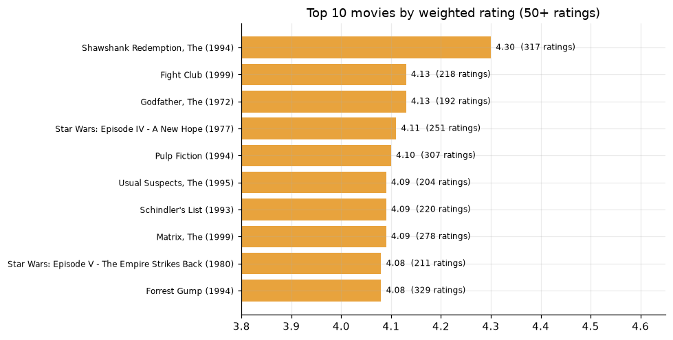
The MovieLens sample in plain SQL: a weighted rating that stops one-vote movies from topping the chart, genre popularity from a many-to-many table, user activity deciles and the films that split the audience, built from a standard deviation computed out of sums.
October 6, 2026
Inside New York's Restaurant Inspections
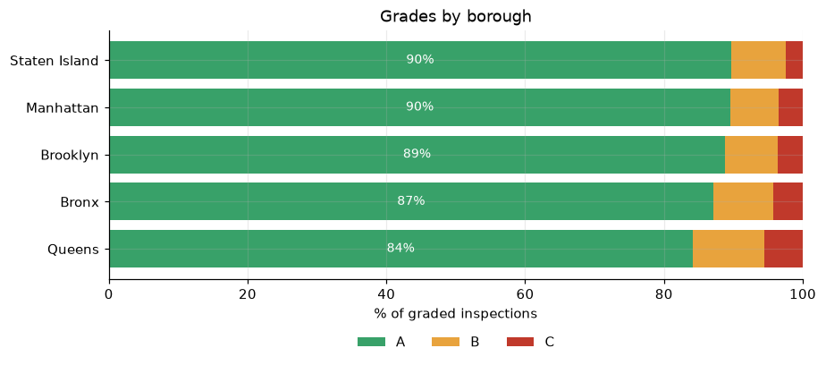
163,000 inspection records for 26,000 restaurants: A, B and C grades by borough, the most cited violations, medians per cuisine built from window functions, chain rankings from both ends and what happens at the next inspection after a failing one.
October 6, 2026
25 Seasons of the Premier League
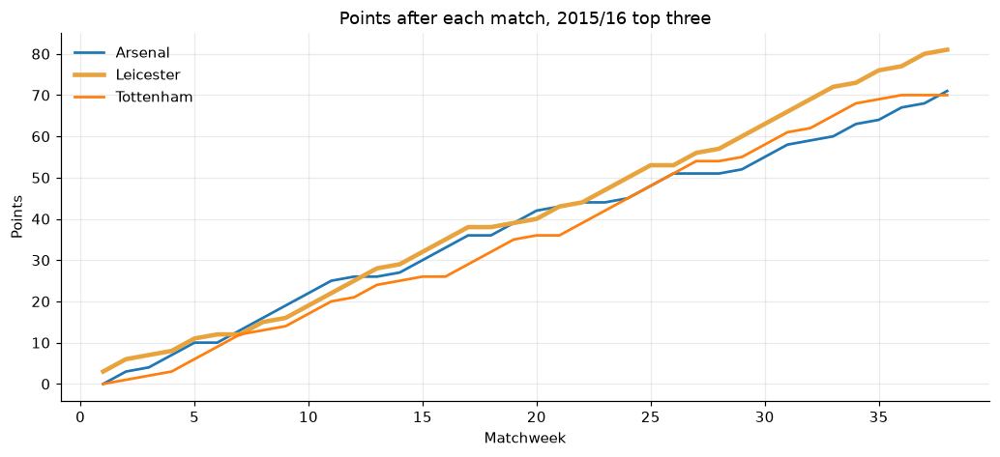
9,500 matches from 2000/01 to 2024/25, with every league table rebuilt in SQL: champions and margins, Leicester's title race, Arsenal's 49-match unbeaten run, comebacks, home advantage without crowds and a calibration check of the bookmakers' odds.
October 5, 2026
Jobs and Prices Across Europe
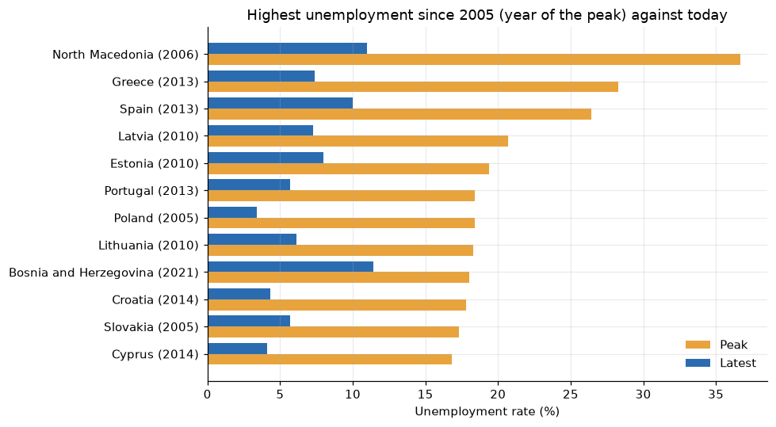
Monthly unemployment and inflation for about 40 European countries from Eurostat: crisis peaks and recoveries, Poland against the EU average, the 2022 price shock by category and the longest runs of falling unemployment.
October 5, 2026
A Year of Road Collisions in Britain
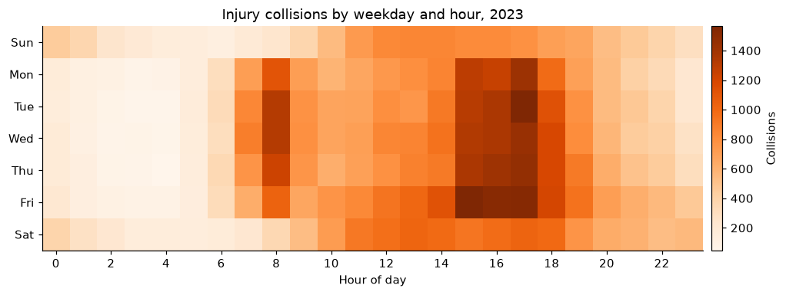
104,258 injury collisions across three linked tables from the Department for Transport: how severity changes with speed limit, darkness, vehicle type and age, and why the quiet night hours are the most dangerous.
October 5, 2026
A Month of New York Yellow Cabs
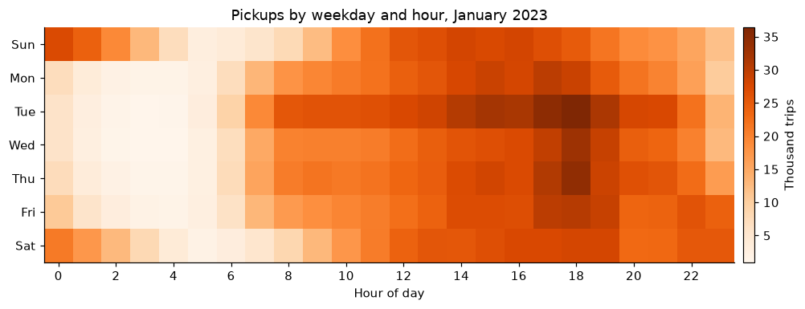
Three million real taxi trips from January 2023, queried in SQL: week-on-week change with LAG, the evening rush, airport runs, tipping behaviour and how traffic speed drops to about 12 mph in the daytime.
October 4, 2026
60 Years of Countries Getting Richer
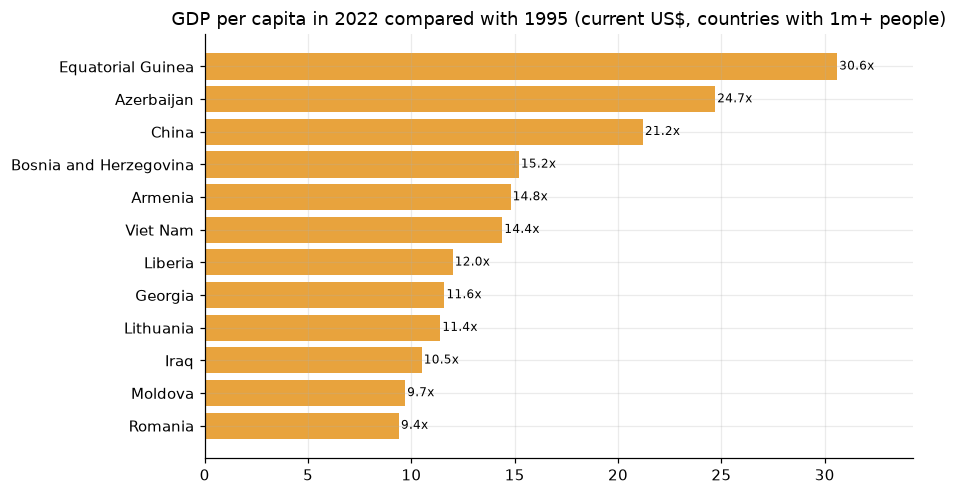
Income, population, life expectancy and CO2 for 217 countries since 1960, from the World Bank API: growth indices, the pandemic's hit to life expectancy, income versus health and who grew while cutting emissions.
October 4, 2026
What New Yorkers Complain About
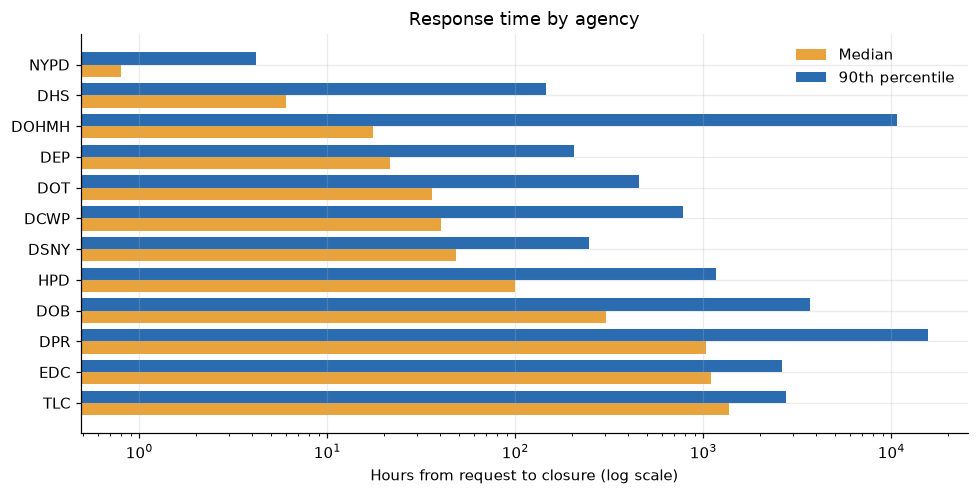
214,000 real 311 requests from NYC Open Data. Medians and percentiles built from window functions show which agencies respond within an hour and which take weeks, plus complaint clocks, seasons and borough fingerprints.
October 4, 2026
A Year of Crime in Chicago
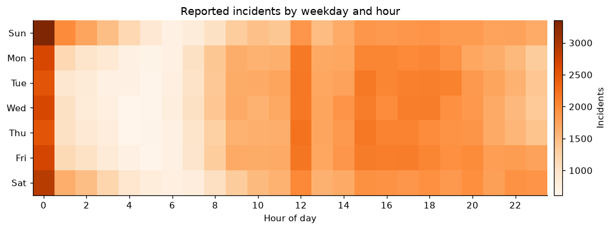
All 263,850 incidents reported in 2023, explored in SQL: arrest rates by crime type, neighbourhood profiles, a z-score for unusual days, a 42-day hot streak and why the 1st of the month spikes.
October 4, 2026
Two Years of an Online Gift Shop
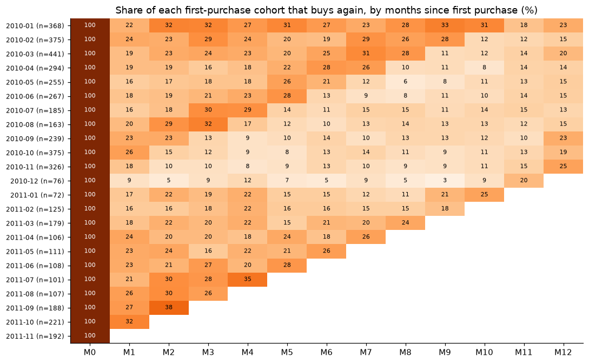
One million real order lines from a UK wholesale retailer: Christmas seasonality, a Pareto of customers, RFM segments, cohort retention and a market-basket analysis with lift. All in plain SQL.
October 4, 2026
A Music Store in Plain SQL
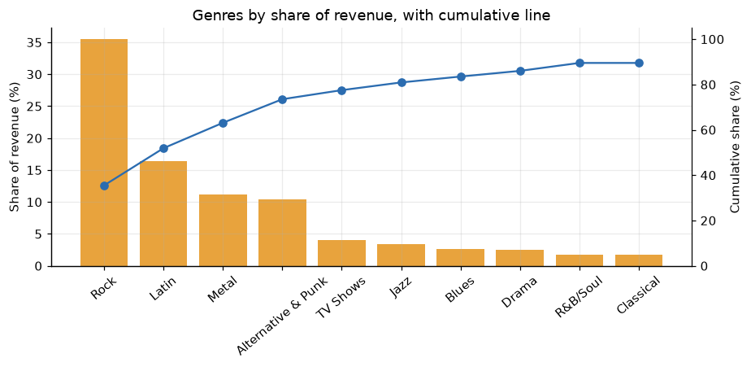
Ten business questions on the Chinook sample database, answered in pure SQL: window functions, a recursive CTE, cohort retention, RFM segmentation and a market-basket self-join. It is generated sample data, so the project shows technique rather than real-world findings.